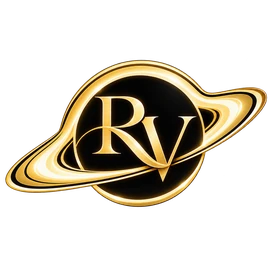
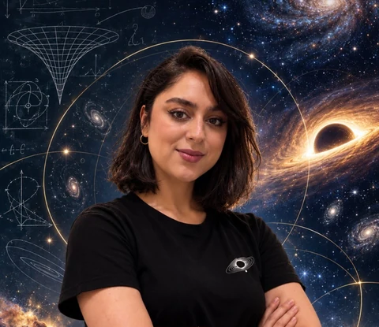

سیاهچالهها
و اختروشها
بررسی جرم و تحول سیاهچالههای کلانجرم و اختروشهای درخشانی که در دورههای مختلف تاریخ کیهان، حضور آنها را آشکار میکنند.
هستههای فعال کهکشانی · LSTM · تحول کیهان
پژوهشگر اخترفیزیک · مدرس · مروج علم
پرسشهای بزرگ. جهانی از امکانها.
دربارهٔ سیاهچالهها و کهکشانهای دوردست پژوهش میکنم و شگفتی علم را به زندگی روزمره میآورم.

۰۱ / دربارهٔ من
سلام، من ریحانهام. میتوانید رِی صدایم کنید.
پژوهشگر اخترفیزیک هستم و در رشتهٔ گرانش و کیهانشناسی از دانشگاه صنعتی خواجه نصیرالدین طوسی کارشناسی ارشد گرفتهام. در پژوهشهایم، برای مطالعهٔ سیاهچالهها و کهکشانها از مدلهای فیزیکی و روشهای یادگیری ماشین استفاده میکنم.
بررسی میکنم که از اختروشهای دوردست چه میتوان آموخت، کهکشانهای آغازین چه چیزی دربارهٔ مدلهای کیهانشناسی به ما میگویند و هوش مصنوعی چگونه میتواند الگوهای معنادار را در دادههای نجومی پیدا کند.
این کنجکاوی همهجا همراهم است: در کلاس درس، جلوی دوربین و در جمعهایی که بخشی از آنها هستم. علم، کتابها و تجربههای مشترک، هر کدام راه تازهای برای دیدن جهان پیش رویم میگذارند.
۰۲ / کاوش در کیهان
از نخستین کهکشانها تا سیاهچالههای مرکز آنها، با تکیه بر مدلهای فیزیکی و دادههای رصدی به دنبال شناخت بهتر کیهان هستم.
بررسی جرم و تحول سیاهچالههای کلانجرم و اختروشهای درخشانی که در دورههای مختلف تاریخ کیهان، حضور آنها را آشکار میکنند.
هستههای فعال کهکشانی · LSTM · تحول کیهانآزمودن مدلهای هالهٔ مادهٔ تاریک با رصدهای جیمز وب در انتقالبهسرخ بالا، برای فهم اینکه کهکشانهای پرجرم چگونه اینقدر زود شکل گرفتهاند.
جیمز وب · مادهٔ تاریک · کیهانشناسیتوسعهٔ روشهای یادگیری ماشین، از جمله خودرمزگذارها، برای شناسایی اختروشهای درخشان در دادههای میدانهای ژرف اقلیدس.
اقلیدس · پایتون · یادگیری ماشینPHYSICAL REVIEW D · 112, 123503
بررسی اینکه توصیف واقعگرایانهترِ فروریزش هالهها چگونه میتواند ناسازگاری ظاهری میان کهکشانهای آغازینِ رصدشده با جیمز وب و پیشبینیهای کیهانشناسی را کاهش دهد.
THE ASTROPHYSICAL JOURNAL · 954, 164
بهکارگیری یادگیری عمیق برای مدلسازی رابطهٔ جرم سیاهچالههای اختروشها با انتقالبهسرخ و مقایسهٔ پیشبینیها با رصدها.
در حال داوری در Physical Review D
ارسالشده به Physical Review D · ژوئن ۲۰۲۶
پیوند مدلسازی تصادفی، روشهای تحلیلی و یادگیری ماشین برای بررسی تحول جرم سیاهچالهها.
میدان ژرف جنوبی اقلیدس
توسعهٔ روشی مبتنی بر هوش مصنوعی برای شناسایی اختروشهای درخشان در دادههای اقلیدس.
برای مقالات منتشرشده، پیوند نشریه و نسخهٔ پیشچاپ در دسترس است. وضعیت ارسال، داوری و نگارش پژوهشها بر اساس رزومهٔ ۲۰۲۶ من و بهروزرسانیهای بعدی درج شده است.
۰۳ / تجربهها و دستاوردها
پژوهش، آموزش و علاقهای همیشگی به دنبالکردن پرسشهای تازه و مسئلههای جذاب.
دستیار پژوهشی · شناسایی اختروشهای درخشان در میدانهای ژرف اقلیدس با هوش مصنوعی.
دستیار پژوهشی · کهکشانهای با انتقالبهسرخ بالای جیمز وب و مدلسازی دادهمحور اختروشها.
بررسی فروریزش دیوارههای حوزهای کروی با دکتر نیما خسروی.
دستیار پژوهشی · هستههای فعال کهکشانی، سیاهچالههای کلانجرم و سیاهچالههای نخستین.
دانشگاه صنعتی خواجه نصیرالدین طوسی. پژوهش کارشناسی دربارهٔ سیاهچالههای آنالوگ و پژوهش کارشناسی ارشد دربارهٔ سیاهچالههای نخستین بهعنوان مادهٔ تاریک.
دانشگاه تگزاس تک · معتبر از ۲۰۲۵ تا ۲۰۳۰.
راهنمایی تیمی ششنفره در مسابقات فیزیکدانان جوان ایران (PYPT) که مدال نقره گرفت؛ چهار نفر از اعضای تیم به تیم ملی ایران راه یافتند.
کسب عنوان دانشجوی برتر و نمرهٔ عالیِ ۲۰ از ۲۰ برای پایاننامه.
مدال برنز PYPT و راهیابی به تیم ملی ایران.
جشنوارهٔ ملی پژوهشهای دانشآموزی تبیان: ارتباطات لیزری و «شنیدن نور».
مهارتها و ابزارها
فارسی · زبان مادری / انگلیسی · C1، تافل ۱۰۸ / آلمانی · C1
در حال یادگیری فرانسوی، ایتالیایی و عربی نیز هستم. با CAMB و CosmoMC در کارگاههای آموزشی آشنا شدهام.
۰۴ / تدریس و راهنمایی علمی
فیزیک وقتی ماندگار میشود که دانشآموزان فرصت پیدا کنند مثل یک فیزیکدان فکر کنند.
تجربهٔ تدریسم از آموزش فیزیک و ریاضی به زبان انگلیسی در مدرسه تا دستیاری آموزشی در مقطع کارشناسی ارشد و راهنمایی تیمها در رقابتهای پژوهشمحور را در بر میگیرد.
گفتوگو دربارهٔ تدریس یا رویداد علمیتدریس فیزیک و ریاضی در دورههای A-Level، IGCSE و O-Level؛ مدرس و سرپرست گروه در کالج گلوکال و مدرس در مدرسهٔ بینالمللی حکیم.
دستیار آموزشی درسهای نسبیت عام و کیهانشناسی در مقطع کارشناسی ارشد دانشگاه صنعتی خواجه نصیرالدین طوسی.
راهنمایی فیزیکدانان جوان و داوری در مسابقات فیزیکدانان جوان و پژوهشگران جوان علوم طبیعی ایران.
مدیر آموزشی پیشین مدرسهٔ ایرانی کمبریج، با فعالیت در توسعهٔ برنامهٔ درسی و توانمندسازی معلمان. همچنین در ترجمه و ویرایش علمی فعالیت داشتهام؛ از جمله همکاری روی کتاب «بنیادها: ده کلید به واقعیت» اثر فرانک ویلچک.
مدرس ارشد و ناظر آموزشی زبان آلمانی در آموزشگاه زبان ملل، تهران · اوت ۲۰۱۸ تا ژانویهٔ ۲۰۲۱.
تدریس پارهوقت زبان انگلیسی و آلمانی در آموزشگاههای زبان تهران · ژانویهٔ ۲۰۱۵ تا ژانویهٔ ۲۰۲۱؛ از جمله ملل، زبان اول، فارسیان، پردیسان، ایران جهان و پپتاک.
فیزیک، ریاضی، زبان انگلیسی و زبان آلمانی را بهصورت آنلاین تدریس میکنم. در جلسهٔ ارزیابی اولیه و مشاوره، سطح فعلی، هدفها و نیازهای شما را بررسی میکنیم تا مسیر مناسبی برای یادگیری پیشنهاد دهم.
فرم کوتاه درخواست را تکمیل کنید و درس موردنظر، سطح فعلی و هدف خود را بنویسید. همهٔ کلاسها بهصورت آنلاین برگزار میشوند.
درخواست جلسهٔ ارزیابی و مشاورهزمان و جزئیات جلسه پس از هماهنگی از طریق ایمیل تأیید میشود.
۰۵ / از علم میگویم
سیاهچالهها، پرسشهای بزرگ و زندگی یک پژوهشگر. در ویدئوها و گفتوگوهایم، هم از علم میگویم و هم از زندگی خودم در مسیر پژوهش.
دیدن کانال یوتیوب منروزمرههای پژوهش
نگاهی به روزمرهٔ پژوهش و کارهایی که پشت هر پرسش علمی قرار دارند.
اخترشناسی و هوش مصنوعی
پرسشی در نقطهٔ تلاقی علاقههای پژوهشی من.
۰۶ / جمعهایی که کنار هم ساختهایم
بعضی از دوستداشتنیترین کشفهایم از دل داستانها، تجربههای مشترک و آشنایی با آدمهای تازه شکل میگیرند.
در FilYc، سینما بهانهای برای کشف فیزیک است. با هم فیلم میبینیم و بعد از دریچهٔ علم به جهان آن نگاه میکنیم؛ از ایدههایی که با فیزیک سازگارند تا خیالپردازیهایی که پرسش تازهای در ذهنمان روشن میکنند: «چه میشود اگر؟»
آشنایی با FilYc@the_filycTR یا Textual Relations، فضایی برای کتابخوانی، تجربههای فرهنگی و ارتباطهای معنادار است. از یک داستان شروع میکنیم و به گفتوگو، آشنایی و دوستی میرسیم.
آشنایی با باشگاه کتاب TR@tr.bookclubمدیریت اختصاصی مسیر تحصیلی
Vellum House
مسیری تحصیلی متناسب با استعدادها و هدفهای هر فرد.
در ولوم هاوس، مسیر تحصیل را با برنامهای منسجم و متناسب با نیازهای هر فرد پیش میبریم؛ از کلاس درس تا پذیرش دانشگاه و پس از آن.
هر دانشآموز، یک برنامهٔ پیوسته.
ولوم هاوس، دفتر مدیریت اختصاصی مسیر تحصیلی برای دانشآموزان، دانشجویان و خانوادههایی است که میخواهند آموزش، انتخاب برنامهٔ درسی، رشد فردی و پذیرش دانشگاه در یک مسیر منسجم پیش برود.
آموزش تخصصی، نقشهٔ راه شخصی و ارزیابی مستمر در کنار هم قرار میگیرند. خانوادهها هر ماه تصویری روشن از پیشرفت دریافت میکنند و هر گام بعدی، با توجه به اهداف، توانمندیها و چشمانداز تحصیلی فرد طراحی میشود.
۰۱ / راهبری تحصیلی
ارزیابی و برنامهریزی بلندمدت برای مسیرهای IGCSE، A Level، IB، SAT و AP، همراه با آموزش خصوصیِ هماهنگ با نقشهٔ راه هر دانشآموز.
۰۲ / سوابق و پذیرش
برنامهریزی برای فعالیتهای پژوهشی، شرکت در رقابتها و کسب تجربهٔ رهبری؛ در ادامه، انتخاب دانشگاه و آمادهسازی درخواست پذیرش، انگیزهنامه و دیگر نوشتههای موردنیاز و مصاحبهها.
۰۳ / تداوم و همراهی
ارزیابی ماهانه و گزارشدهی به خانواده، در کنار پشتیبانی از برنامهریزی درسی در دانشگاه، تعیین مسیر پژوهش و درخواست پذیرش تحصیلات تکمیلی.
آغاز همکاری با جلسهٔ مشاوره
نقطهٔ آغاز هر برنامه، خودِ دانشآموز یا دانشجوست. در جلسهٔ مشاوره، اهداف شما را میشناسیم و با هم بررسی میکنیم که آیا ولوم هاوس همراه مناسبی برای مسیر پیش روی شماست.
فرم کوتاه درخواست را تکمیل کنید و مقطع تحصیلی، هدفها و مهلتهای مهم را بنویسید. اگر از طرف دانشآموز یا دانشجو تماس میگیرید، نسبت خود را نیز ذکر کنید.
۰۷ / شروع یک گفتوگو
همکاری پژوهشی، تدریس، ترویج علم،
یا ایدهای که ارزش گفتوگو دارد.